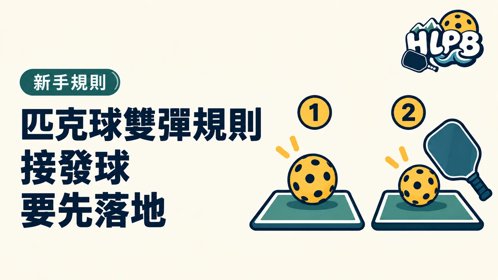

兩次落地發生在何時？
第一拍發球後，接發方必須等球落地再回擊。第二拍回球過網後，發球方也必須等球落地再回擊。兩邊各落地一次後，雙方才可以選擇空中截擊或等球落地再打。
它也常被稱作雙彈規則，指兩隊各自接到的第一球都要先落地，並不是同一側要彈兩下。
若想接近網前，再記得非截擊區規則。到新手頁快速複習，上場會更安心。
資料參考：USA Pickleball 規則摘要。實際活動及賽事以其規定為準。
最後查證：2026-09-28｜資料來源：USA Pickleball 規則摘要
返回文章列表